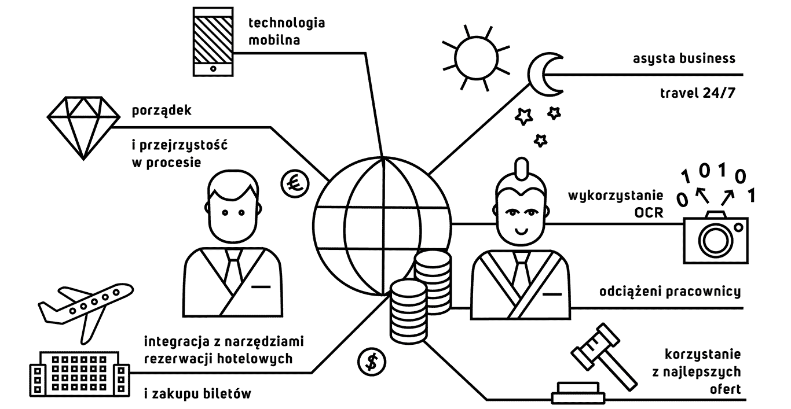

Firma prowadząca działalność w wielu krajach wymaga od swoich pracowników regularnych podróży służbowych. To właśnie wtedy istotnego znaczenia nabiera efektywne zarządzanie procesem Travel & Expense. Dobry system zapewnia porządek i przejrzystość w procesie, ułatwia rezerwacje i zakup biletów, kontroluje koszty i ogranicza ilość pracy odciążając pracowników. Takim rozwiązaniem jest nasza aplikacja, która dodatkowo jest zawsze tam, gdzie Twój zespół. Użytkownikom udostępniamy wersję mobilną z asystą business travel 24/7. System jest dostępny w polskiej i angielskiej wersji językowej oraz obsługuje wiele walut przeliczając kursy wg tabeli NBP i odpowiednich banków. Nasz system to:
